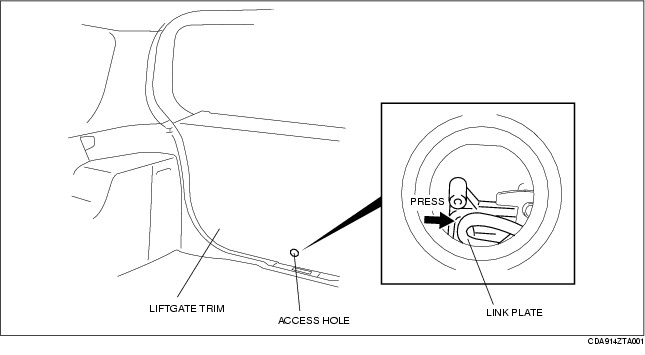
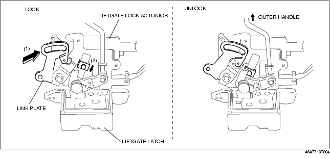

Liftgate lock actuator construction/operation
• Models equipped with the keyless entry system do not have a liftgate key cylinder. If there are malfunctions in the keyless entry system with the liftgate locked, the liftgate cannot be unlocked. Instead, the liftgate lock actuator can be unlocked manually from a newly- adopted access hole on the liftgate lower trim.

Operation
• The liftgate latch is switched from the lock to unlock position when the link plate is moved in the direction of arrow (2) after the link plate is pressed in the direction of arrow (1).
